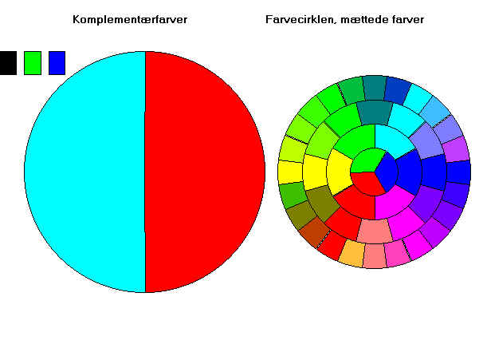

De to halvcirkler til venstre viser komplementærfarver. Den lyseblå farve er additiv blanding og grøn og blå (og intet rødt). De tre firkanter øverst til venstre markerer blandingsfarverne rød, grøn og blå. Vi ser, at grøn + blå giver lyseblå og at komplementærfarven er rød.
I farvecirklen til højre ses i inderste cirkel farverne rød, grøn og blå. De er blandet additivt og resultatet ses i ring 2. Bemærk, at grøn og blå netop giver lyseblå og at komplementærfarven rød ses overfor.
På farvecirklen ses kun mættede farver. Figuren til venstre viser også brækkede farver, her kan man ikke finde farve og komplementærfarve på figuren til højre.
Prøv nu selv vha. scrollbarerne at udvælge en blandingsfarve (og dermed dens komplementærfarve). Find så farverne på farvecirklen og se, at en farve er placeret overfor dens komplementærfarve.
Pc'ens farver
På skærmen dannes farverne vha. 3 grundfarver: rød, grøn og blå. Rød har talværdierne 0 til 255. I det hexadecimale talsystem svarer disse talværdier fra 00 til FF. Grøn har talværdierne fra 256 til 65535, det svarer til hextal til 100 til FF00. Endelig har blå talværdierne fra 65536 til 16777216, hvilket i hextal svarer til 10000 til FF0000. Det bliver mere overskueligt i en tabel:
| Farve | mættet (fuld talværdi) |
| rød | FF |
| grøn | FF00 |
| blå | FF0000 |
| gul = rød + grøn | FFFF |
| hvid = rød + grøn + blå | FFFFFF |
| sort = ingen farve | 0 |
På en skærm, der er indstillet til at vise 256 farver, vil figurerne ikke blive pæne. Indstil skærmen til at vise 16 eller 24 bit farver. Ovenstående talværdier svarer jo til 24 bit farver.
Prøv at sammenholde tallene i denne tabel med farvecirklen.
Prøv at kikke gennem en lup på skærmen.
Litteratur: Fysikkens Verden II af Finn Elvekjær og Børge Degn Nielsen, Gjellerup & Gad.